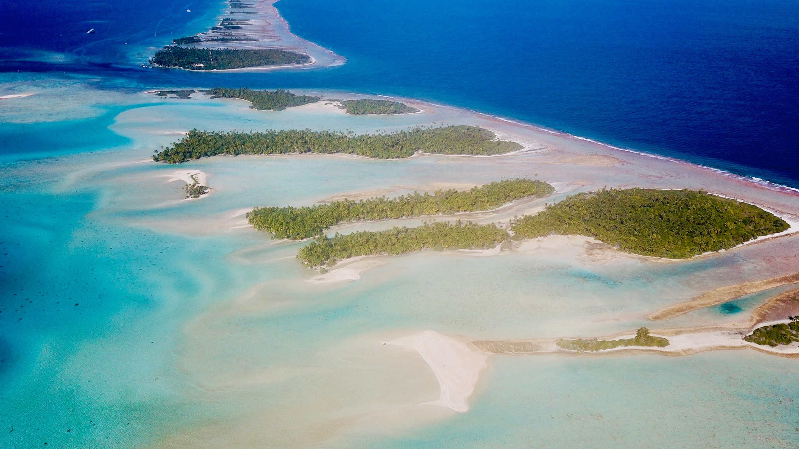
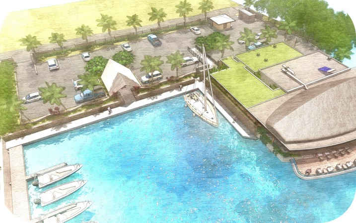
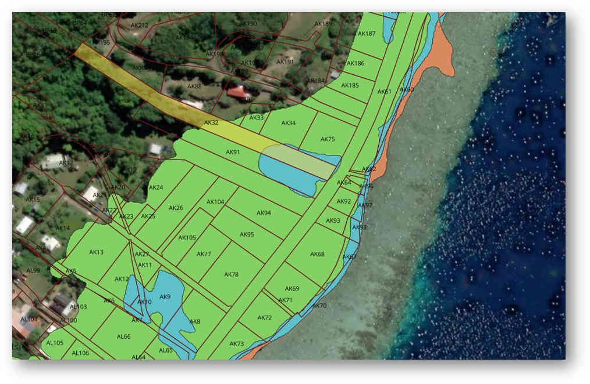

Notre bureau d’études
Une expertise maritime ancrée en Polynésie
Fort de plus de 15 ans d’expérience en ingénierie maritime, Delande Ingénierie accompagne les acteurs publics et privés dans la conception, l’étude et l’optimisation de leurs projets en Polynésie française.
Ancré au plus près des réalités du fenua, notre bureau d’études développe des solutions fiables, pragmatiques et adaptées aux enjeux littoraux et aux environnements insulaires.

Une approche globale et partenariale
Pour répondre à l’ensemble des besoins d’un projet, nous nous appuyons sur un réseau de partenaires fiables et complémentaires : modélisation numérique, structures, environnement, géotechnique ou VRD.
Cette synergie nous permet de proposer une approche complète, cohérente et techniquement maîtrisée, à chaque étape du projet.

Un accompagnement engagé et transparent
Collectivités, entreprises ou particuliers : nous vous accompagnons avec rigueur, transparence et engagement pour sécuriser vos choix et concrétiser vos aménagements maritimes en toute confiance.

Contactez-nous
Delande Ingénierie
Études littorales & aménagements maritimes